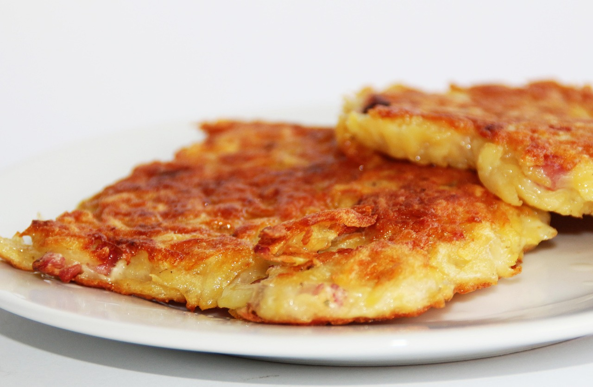

Home
Potato Pancakes

Photo from Pixabay
Description
It's an easy and quick pancakes recipe with a twist!
Potato pancakes are both crispy and tender.
Ingredients
- Potatoes
- Egg
- Seasonings
- Flour
- Oil
Steps
- Grate the potatoes and drain the excess liquid
- Add the rest of the ingredients in a bowl and mix
- Drop a spoonfull of the mix into hot oil, then flatten it with the back of a spatula
- Fry until they look golden
- Serve and enjoy!
Home